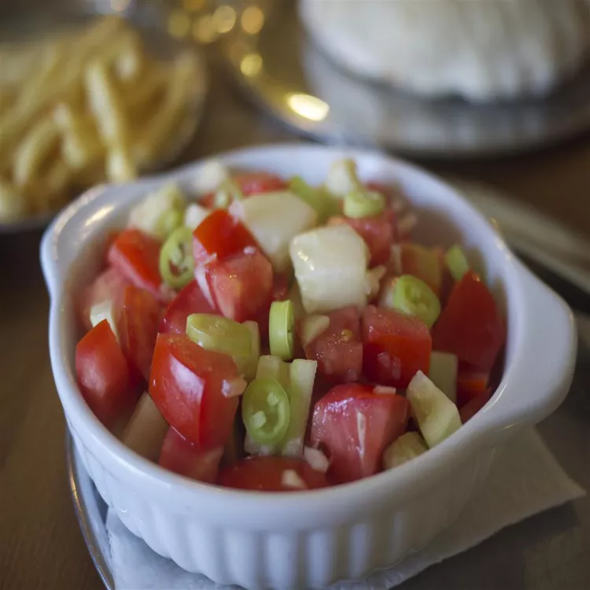

Serbian Salad

Description
If you like a nice fresh summery tomato salad with a "kick" you'll love this one!
Ingredients
- 1 cup red tomatoes, cut into wedges
- ½ cup cubed cucumber
- ¼ cup diced red onion
- ¼ cup extra-virgin olive oil
- salt to taste
- 1 banana pepper, sliced into 1/4 inch rings
- parsley for garnish (optional)
Steps
- Combine tomatoes, cucumber, and red onion in a large bowl.
- Drizzle with olive oil and stir.
- Season to taste with salt.
- Sprinkle banana pepper slices on top and garnish with parsley.